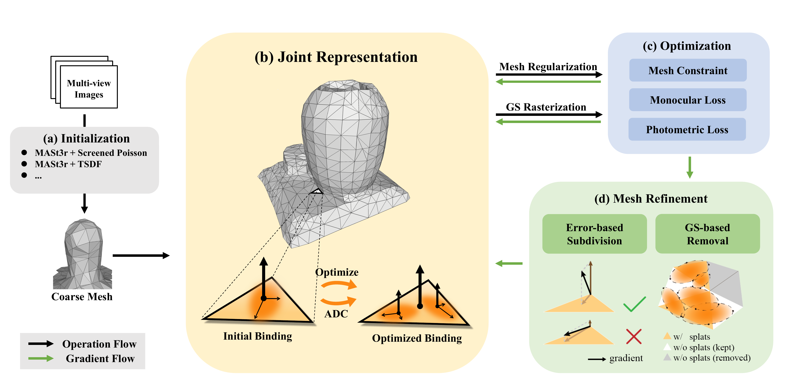
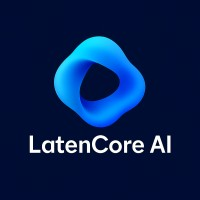

About
I am a World Model Research Intern on the Genie Team at AGIBOT, working on evaluating robot policies with generated video rollouts. I also work with Prof. Ayush Tewari at the Visual Structure Learning Lab, University of Cambridge, on dynamic scene reconstruction.
My work spans reconstructing dynamic environments from sparse observations, learning bimanual manipulation from human demonstrations, and evaluating robot behavior in learned simulators.
I studied Machine Learning and Machine Intelligence at the University of Cambridge (MPhil, 2025–2026), and received my B.Eng. in Computer Science and Technology from Beihang University in 2025. Previously, I interned at LatenCore AI and Galaxea AI.
I am seeking PhD opportunities in world models, robot learning, and 3D/4D vision. Get in touch
Publications
* Equal contributionResearch Experience
Aug 2026– Present

AGIBOT
World Model Research Intern
Genie Team Shanghai, China
Mar 2026– Present

University of Cambridge
Visual Reconstruction and Video Generation Researcher
Visual Structure Learning Lab Cambridge, UK
Advised by Prof. Ayush Tewari
May 2026– Aug 2026

LatenCore AI
Physical AI Intern
Cambridge, UK
Advised by Dr. Chuang Yu (UCL Interaction Center)
Jun 2024– Feb 2025
Galaxea AI
3D Computer Vision Research Intern
Beijing, China
Advised by Prof. Hang Zhao (Tsinghua University)
Education
Oct 2025– Aug 2026
University of Cambridge
MPhil in Machine Learning and Machine Intelligence
Thesis: Efficient 4D Reconstruction from Temporally Sparse Keyframes.
Sep 2021– Jun 2025

Beihang University
B.Eng. in Computer Science and Technology